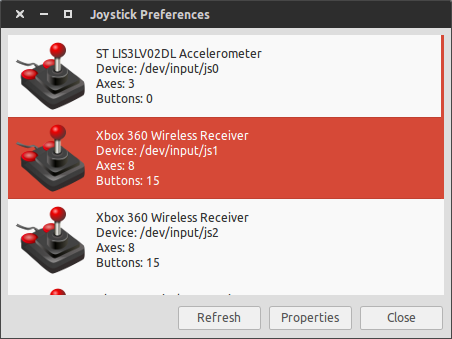

F.A.Q.¶
How do I find out the ID number my joystick?¶
You can use jstest-gtk to find that out. To install it, run
sudo apt-get install jstest-gtk
and run it on the terminal. It will open a window as seen below. The joystick devices are named /dev/input/js1 for the device #1. You can use this index for the launch files that have the input option joy_id.
My machine doesn’t seem to see the services and topics from the roscore running remotely¶
If you are having trouble running your application in multiple computers, you can try adding the hostnames and IP addresses of your machines to the /etc/hosts file of the computer running roscore.
After running catkin build, I still can’t start any nodes or launch files¶
If after compiling your catkin workspace using catkin build ROS seems to not update the paths to the packages even after you run
cd ~/catkin_ws
source devel/setup.bash
you can try disabling the option to source the install folder of your catkin workspace by running
cd ~/catkin_ws
catkin config --no-install
catkin clean --all
Then rebuild your workspace
cd ~/catkin_ws
catkin build
source devel/setup.bash
The Gazebo worlds don’t start when running the simulation on a virtual machine¶
To avoid segmentation faults when starting Gazebo in a virtual machine you can add the following line to your ~/.bashrc file
export LIBGL_ALWAYS_SOFTWARE=1
Note
If you are running VirtualBox, remember to install the guest additions to your virtual machine as well.
Note
It is strongly recommended to have your machine running with Linux natively to run the simulation since the performance on virtual machines can be very poor.